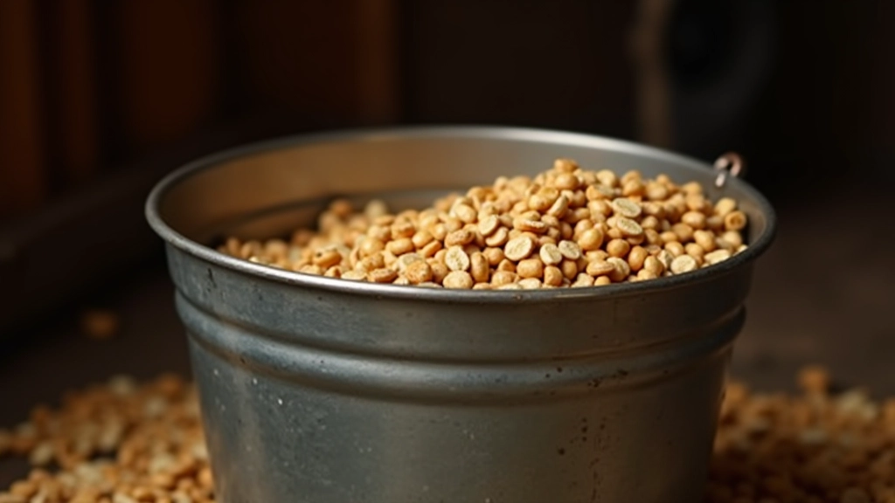
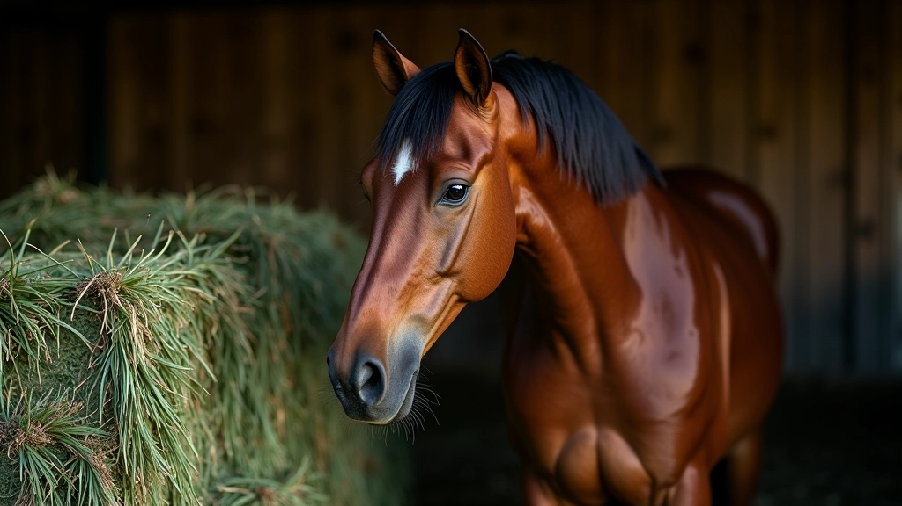
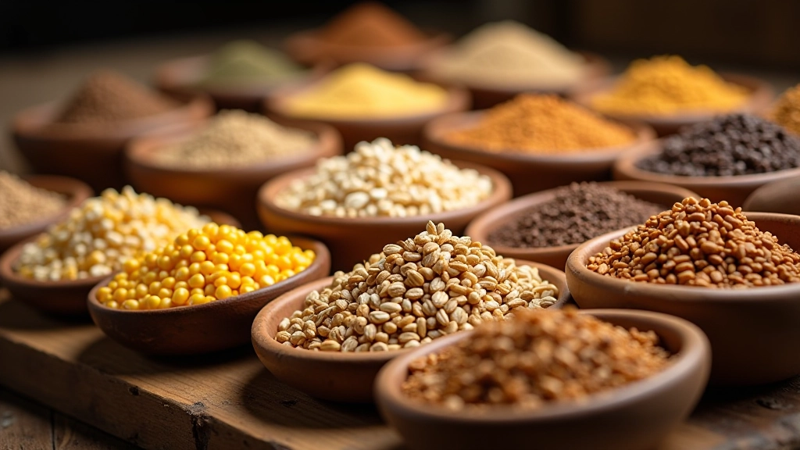
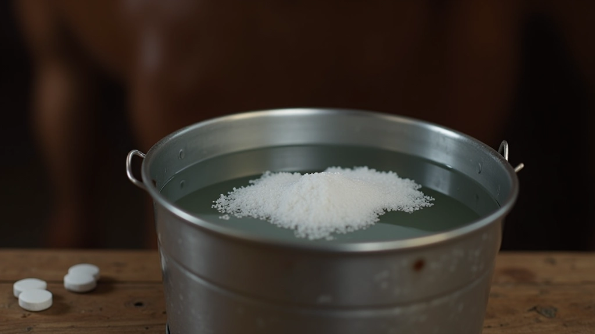
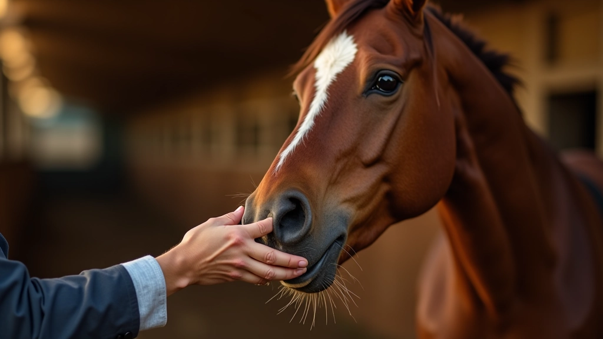
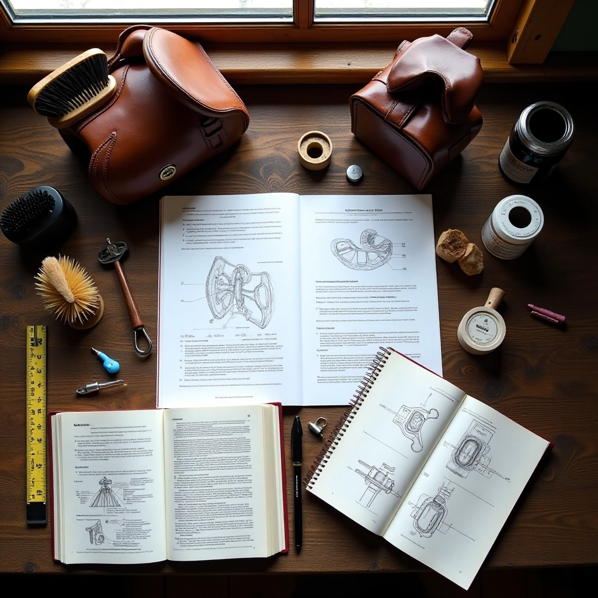
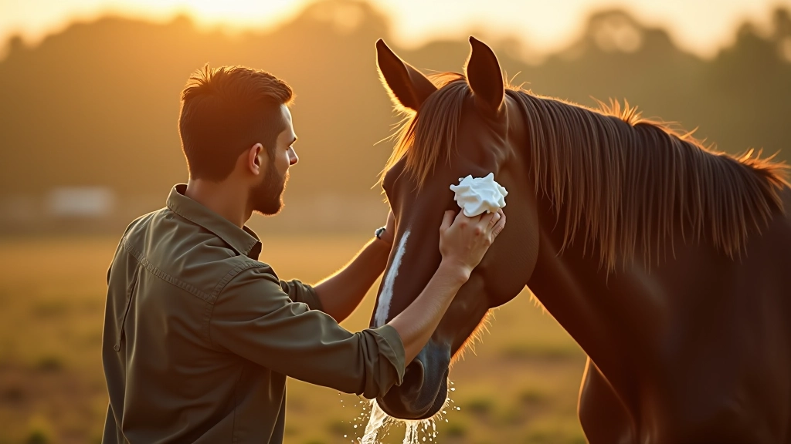
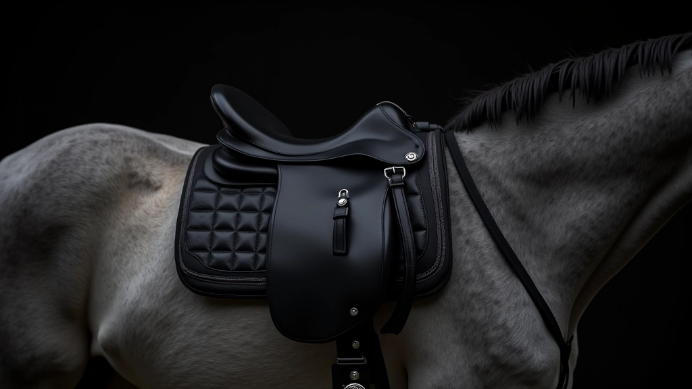
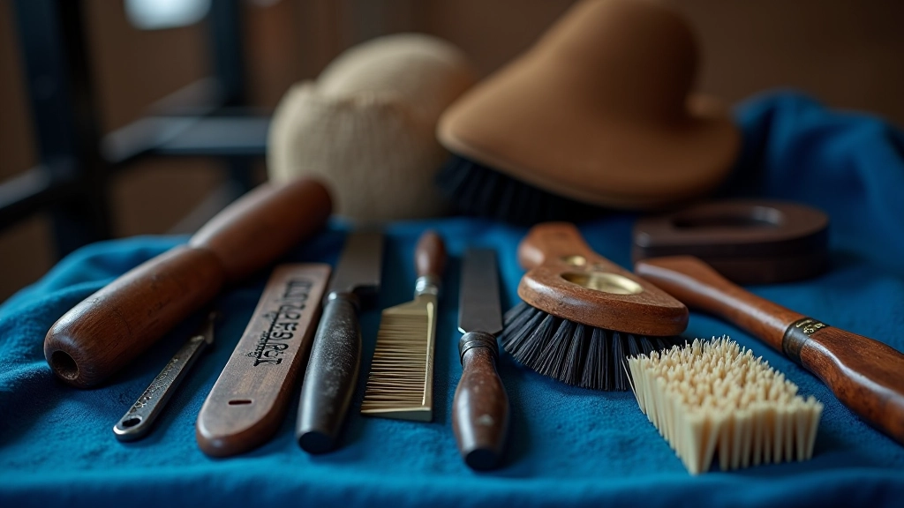

التغذية السليمة للخيل
فهم احتياجات الحصان الغذائية ومعرفة أفضل الأعلاف والمكملات التي تحافظ على صحته وحيويته

لماذا التغذية السليمة مهمة؟
الحصان ليس مثل الحيوانات الأخرى. احتياجاته الغذائية محددة جداً، وأي خطأ في التغذية يؤثر مباشرة على صحته وأدائه. عندما تختار الأعلاف المناسبة، ستلاحظ تحسناً واضحاً في لمعان معطفه وطاقته وحتى سلوكه.
الشيء الأساسي الذي يجب فهمه: الحصان حيوان عاشب، معدته مصممة للرعي المستمر. لا يمكنك إطعاؤه وجبة واحدة كبيرة يومياً. يحتاج إلى وجبات صغيرة وموزعة على مدار اليوم.
النقاط الأساسية
- الحصان يحتاج إلى 1.5-2% من وزن جسده علفاً يومياً
- القش يجب أن يكون المصدر الأساسي للغذاء
- الماء النظيف ضروري في كل وقت
- الحبوب والأعلاف المركزة تكملة فقط
القش والعلف الأخضر: الأساس
القش هو غذاء الحصان الرئيسي. يجب أن يكون متوفراً طوال اليوم، وليس فقط عند وقت الطعام. حصان بالغ يأكل حوالي 8-10 كيلوغرامات من القش يومياً، لكن هذا يختلف حسب حجم الحصان ومستوى نشاطه.
اختر القش الأخضر الطازج، بدون رائحة عفن. يجب أن تشم رائحة طبيعية لطيفة. تجنب القش الذي يحتوي على نباتات سامة أو أتربة كثيرة. الجودة العالية تعني فرس أكثر صحة.
العلف الأخضر (الجزر والبرسيم والشعير الأخضر) يضيف تنويعاً ممتازاً. جرب إضافة حفنة من الجزر المقطع أو الشعير الأخضر مع الوجبة. لا يستغرق وقتاً طويلاً وسترى الفرق.


الحبوب والأعلاف المركزة
الحبوب ليست غذاء أساسياً، لكنها ضرورية لخيل العمل والتدريب. الشعير والشوفان والذرة توفر الطاقة التي يحتاجها الحصان للنشاط البدني. كمية صغيرة كافية جداً.
إذا كان حصانك يعمل بشكل خفيف أو معتدل، فإن 2-3 كيلوغرامات من الحبوب يومياً كافية. لا تزيد الكمية بسرعة. أضف نصف كيلوغرام كل أسبوع حتى تصل للكمية المطلوبة. المعدة تحتاج وقتاً للتكيف.
الشوفان آمن جداً وغني بالمغذيات. الشعير أرخص وجيد أيضاً. تجنب الذرة الكثيرة لأنها دهنية جداً. ومهم جداً: لا تعطِ الحبوب مباشرة بعد التمرين. انتظر ساعة واحدة على الأقل.
الماء والمعادن والمكملات
الماء النظيف هو الشيء الأهم. حصان يشرب 20-40 لتراً يومياً حسب الحرارة والنشاط. تأكد من أن ماء الشرب نظيف وبارد. في الشتاء، يفضل بعض الخيول ماء دافئاً قليلاً.
الملح ضروري. أضف كتلة ملح في الحظيرة أو ملعقة ملح مع الطعام يومياً. هذا يساعد على توازن السوائل وتحسين الهضم. بعض الخيول تحب كتل الملح المعدني التي تحتوي على معادن إضافية.
المكملات مثل الكالسيوم والفسفور مهمة للخيول الصغيرة والحوامل والعاملة. لكن لا تضيف مكملات عشوائياً. استشر طبيب بيطري أولاً. كمية خاطئة من المعادن تسبب مشاكل عظمية.


جدول التغذية والعادات الصحيحة
الانتظام أهم من أي شيء. الخيول تحب الروتين. أطعمها في نفس الأوقات كل يوم. هذا يساعد على تحسين الهضم وتقليل التوتر.
جدول بسيط يعمل: الصباح - حبوب خفيفة مع قش. الظهيرة - قش فقط. المساء - حبوب رئيسية مع قش. هذا يوزع الطاقة على مدار اليوم ويبقي المعدة نشطة.
تجنب التغييرات المفاجئة. إذا أردت تبديل نوع العلف، افعله تدريجياً على مدار 7-10 أيام. الجهاز الهضمي للحصان حساس جداً. تغيير سريع يسبب مشاكل معوية.
الخلاصة: ابدأ من الآن
التغذية السليمة ليست معقدة. الأساس بسيط: قش جيد، ماء نظيف، وكمية مناسبة من الحبوب. لاحظ حصانك، تعلم من تجاربك، واستمع لجسده. إذا بدا الحصان سعيداً وطاقته عالية ومعطفه لامع، فأنت تفعل الشيء الصحيح.
ابدأ بفحص ما تطعمه حالياً. هل القش بجودة جيدة؟ هل تطعم في أوقات منتظمة؟ هل الماء دائماً متوفراً؟ إذا أجبت بـ "لا" على أي من هذه الأسئلة، غير الآن. سترى النتيجة خلال أسابيع قليلة.
ملاحظة تنبيهية
هذا المقال معلومات تعليمية عامة عن تغذية الخيول. لا يحل محل استشارة الطبيب البيطري المتخصص. كل حصان فريد، والاحتياجات الغذائية تختلف حسب العمر والوزن والصحة والنشاط. استشر طبيباً بيطرياً قبل إجراء أي تغييرات كبيرة على نظام التغذية. في حالة ظهور أعراض صحية غير عادية، توقف عن التغيير واطلب مساعدة متخصصة.

فريق الإسطبل الذهبي التحريري
فريق التحرير والمحتوى
كتبه فريق الإسطبل الذهبي التحريري، متخصص في تقديم إرشادات عملية وسهلة المتابعة حول رعاية الخيول.
اقرأ أيضاً

خطوات تنظيف الحصان بشكل صحيح
تعرف على الطريقة الصحيحة لتنظيف الحصان يومياً، من الفرشاة الأولى إلى العناية بال...

دليل تركيب السرج خطوة بخطوة
اتعلم كيفية وضع السرج بطريقة آمنة وصحيحة على ظهر الحصان لضمان راحته وسلامة الفار...

أدوات العناية الأساسية بالخيل
اكتشف أنواع الفرش والأدوات المهمة للعناية اليومية بالحصان وكيفية استخدام كل واحد...